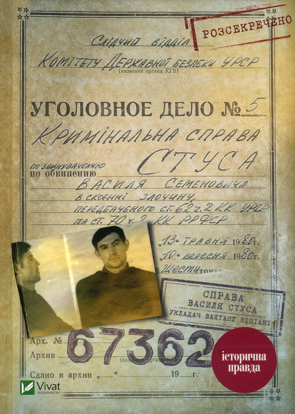
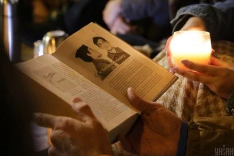

Історичні процеси не закінчуються з винесенням вироків чи смертю їхніх фігурантів. Справа Василя Стуса отримала потужне продовження в умовах незалежної України, ставши своєрідним тестом для суспільства на здатність захищати власну історичну пам'ять від спроб ревізіонізму з боку колишніх функціонерів радянської системи.
У 2019 році український журналіст та історик Вахтанг Кіпіані видав фундаментальну працю Справа Василя Стуса. Ця книга на 90 відсотків складалася з архівних документів колишнього КДБ УРСР, які стали доступними завдяки законам про декомунізацію. У книзі були опубліковані протоколи допитів, ухвали суду, покази свідків та ордери, що крок за кроком відтворювали механізм розправи над поетом. Документи беззаперечно підтверджували політично вмотивований характер справи та висвітлювали колаборантську роль адвоката Віктора Медведчука.
Реакція Медведчука, який на той момент обіймав посаду народного депутата і був одним із лідерів проросійських політичних сил в Україні, була миттєвою і симптоматичною. Розуміючи, що документальна правда руйнує його політичний капітал, він подав позов до суду проти Вахтанга Кіпіані та видавництва Vivat. Вимоги позивача зводилися до заборони розповсюдження тиражу книги та вилучення з тексту дев'яти фрагментів, які нібито шкодили його честі, гідності та діловій репутації.
19 жовтня 2020 року
Фрази, які суд постановив вилучити як "недостовірні":

Однак ця спроба судової цензури обернулася для Медведчука нищівною ідеологічною та медійною поразкою, запустивши класичний ефект Стрейзанд. Суспільна реакція була безпрецедентною. За лічені години після оголошення рішення суду українці розкупили всі наявні залишки тиражу книги. Видавництво заявило про друк нових накладів, загальна кількість яких згодом наблизилася до 100 тисяч примірників. По всій країні прокотилася хвиля протестів; у Києві відбулися акції Справа Стуса. Читання при свічках та Захистимо Стуса! Медведчука — під трибунал!.
Спроба приховати інформацію призводить до її ще більшого поширення
Реагуючи на спробу приховати правду, Центр досліджень визвольного руху спільно з Архівом Служби безпеки України негайно виклали у вільний доступ онлайн-колекцію оригінальних документів зі справи Стуса. Кожен громадянин отримав змогу особисто ознайомитися з анкетами, протоколами допитів, зразками почерку, ордером на призначення Медведчука та вироком суду.
Вихід книги Вахтанга Кіпіані "Справа Василя Стуса"
Дарницький суд частково задовольняє позов Медведчука
Масові протести. Книгу розкуповують за лічені години
Архів СБУ викладає документи справи у вільний доступ
Апеляційний суд скасовує рішення першої інстанції
"Єдина людина, чия честь і гідність були порушені у цій справі — це сам Василь Стус."
Зрештою, апеляційний суд скасував ганебне рішення суду першої інстанції, дозволивши вільне поширення книги. Цей епізод довів, що українська нація сформувала потужні механізми захисту своєї історичної пам'яті і більше не дозволить імперським агентам диктувати умови сприйняття власного минулого.
Головний урок: Пам'ять про Василя Стуса є тим фундаментом, на якому тримається наша сьогоднішня здатність чинити опір імперії.